말씀을 읽고, 마음에 새기다.
큰 글꼴과 성경 탐색 · 추가 시안
Figma에 SVG를 드래그해 가져올 수 있습니다. 설치된 글꼴에 따라 한글 모양이 달라질 수 있습니다.
01 · 큰 글꼴 필사
본문 30pt / 줄 간격 64pt. 줄바꿈에 맞춰 오른쪽 필기 가이드를 추가하고 절 높이를 늘립니다. 필기 샘플은 실제 획이 아닌 글꼴 표현입니다.
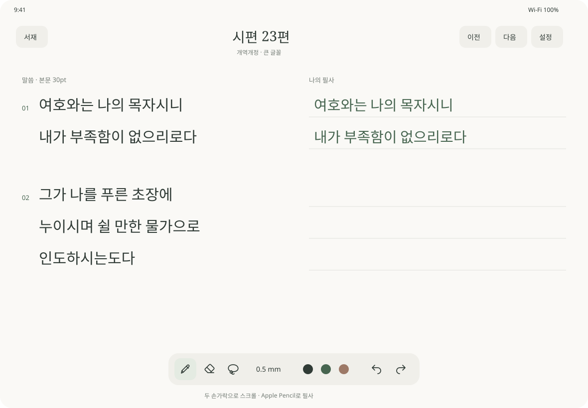
SVG 다운로드
02 · 성경·장 선택
300pt 사이드바와 필사 상세 화면. 구약·신약 → 성경 → 장 순서로 선택합니다. 성경 목록과 장 목록은 각각 스크롤하며, 세로·좁은 화면에서는 사이드바를 오버레이로 표시하는 방향입니다.
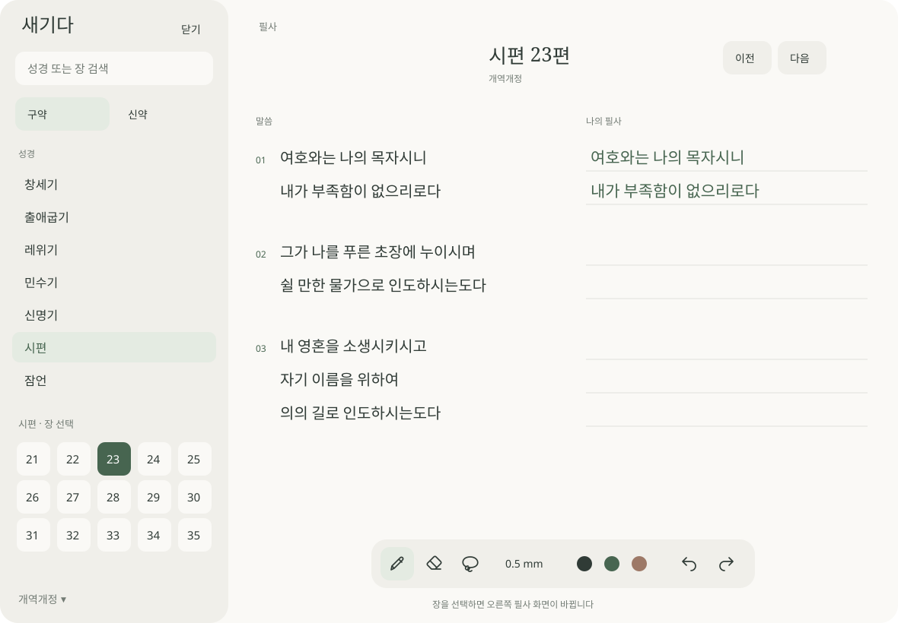
SVG 다운로드
탐색 구조 A/B — 장을 어떻게 고를 것인가
2-column 시안(위 02)은 성경 목록과 장 그리드를 한 컬럼에 함께 넣어 그리드 높이가 약 180pt로 줄었습니다.
한 화면에 약 18장이 보여 현재 앱의 장 목록(약 17장)과 차이가 없습니다.
아래 두 안은 한 컬럼에 스크롤 영역을 하나만 두고, 사이드바가 필사 열 폭을 밀지 않도록(오버레이) 다시 잡은 것입니다.
| 방식 | 한 화면에 보이는 장 | 시편 150장 | 필사 열 폭 |
|---|
| 현재 앱 (3-column 리스트) | ~17 | 8.8 화면 | 사이드바 열면 필사 화면이 가려짐 |
| 02 시안 (2-column, 그리드 180pt) | ~18 | 8.3 화면 | 300pt만큼 밀림 |
| 안 A (오버레이 400pt + push) | 77 | 2.0 화면 | 변하지 않음 |
| 안 B (헤더 팝오버) | 90 | 1.7 화면 | 변하지 않음 |
| 안 C 가로 (3-column 오버레이) | 65 | 2.3 화면 | 변하지 않음 |
| 안 C 세로 (헤더 팝오버) | 100 | 1.5 화면 | 변하지 않음 |
03 · 안 A — 오버레이 사이드바 400pt + push 계층
사이드바가 필사 화면을 밀지 않고 위에 겹칩니다. 폭을 필사 영역에서 빼앗지 않으므로 400pt까지 넓힐 수 있고,
성경 목록 → 장 그리드를 push 계층으로 나눠 각 단계가 사이드바 전 높이를 씁니다. 장 그리드는 7열 × 11행입니다.
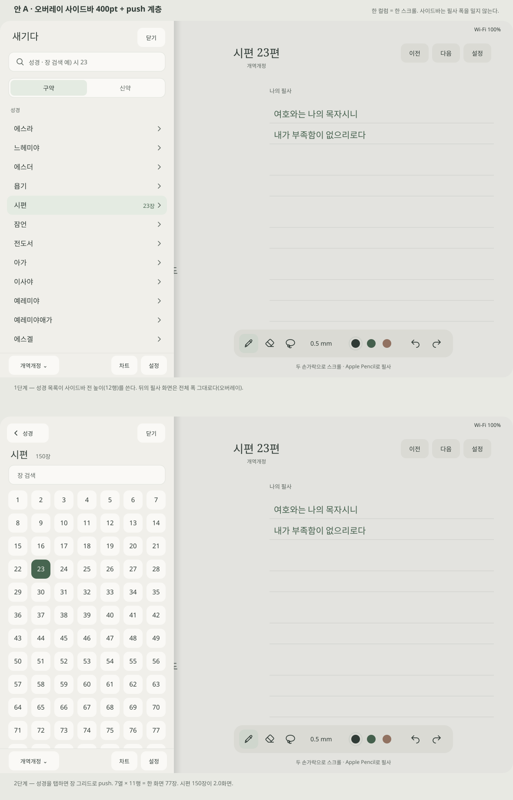
SVG 다운로드
04 · 안 B — 성경 전용 사이드바 + 헤더 제목 팝오버
장 선택을 사이드바에서 빼내 필사 화면 안에서 끝냅니다. 사이드바는 성경만 담아 320pt로 줄고,
장은 헤더 제목을 탭해 나오는 팝오버에서 10열 × 9행 그리드로 고릅니다. 화면 중앙을 쓰므로 그리드가 가장 넓지만 본문을 잠시 가립니다.
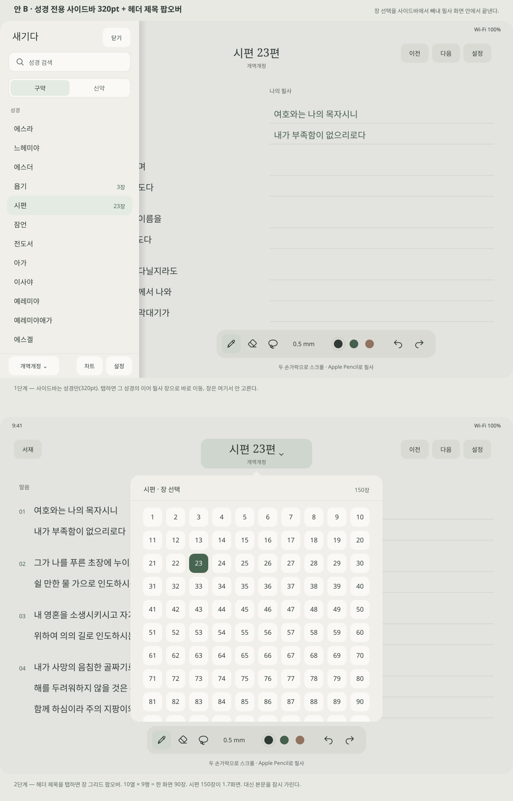
SVG 다운로드
두 안 모두 도구 팔레트를 보이는 영역 기준으로 중앙 정렬했습니다. 사이드바가 하단 중앙 팔레트를 덮는 문제를 피하기 위한 것으로,
캔버스 레이아웃이 아니라 팔레트 위치만 움직이므로 필기 좌표 재계산 자극이 아닙니다.
보조 글자는 #727B74(종이 위 4.15:1, AA 미달) 대신 #5F6862(5.48:1)를 썼습니다.
05 · 안 C — 3-column 오버레이(가로) + 헤더 팝오버(세로) + Liquid Glass
현재 앱의 3-column NavigationSplitView를 그대로 두고, 장 목록만 5열 그리드로 바꾼 안입니다.
.prominentDetail이 이미 leading 컬럼을 detail 위에 덮으므로 필사 열 폭이 변하지 않습니다.
세로에서는 600pt 오버레이가 과해서 장 선택만 헤더 팝오버로 뺐습니다.
세 번째 프레임은 팔레트가 좌측 하단 원형으로 접힌 상태입니다.
유리 표현은 근사입니다. SVG에는 backdrop blur가 없어 뒤 콘텐츠를 블러 복제해 한 겹 깔고 반투명 틴트·상단 스펙큘러·림 라이트를 올린 것으로, 실제 Liquid Glass 재질과 다릅니다.
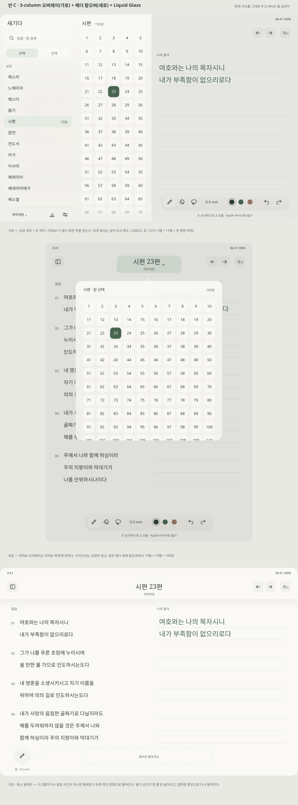
SVG 다운로드
본문 설정 — 시트에서 인스펙터 팝오버로
현재 SentenceSettingsView는 Form 시트이고, 맨 위에 300pt짜리 「예시 문구」(요한복음 3:16) 섹션이 있습니다.
시트가 본문을 덮기 때문에 미리보기용 샘플이 따로 필요했던 것입니다.
헤더 「본문」 버튼에 붙는 오른쪽 팝오버로 옮기면 왼쪽 원문 열이 가려지지 않아 지금 읽는 장에서 바로 미리보기가 되고, 예시 문구 섹션이 없어집니다.
06 · 안 D — 본문 설정 팝오버 · 왼손 사용자용 화면
팝오버 안은 현재 화면과 같은 항목입니다 — 글꼴 3종(나눔바른고딕·나눔명조·나눔꽃향기), 글자 크기 15–40, 줄 간격 5–70, 자간 1–10, 왼손 사용자용 화면, 손가락 필사 허용.
「기본값으로 되돌리기」만 새 제안입니다.
두 번째 프레임은 왼손 설정을 켠 상태로, 필기 열이 왼쪽으로 가고 축소 팔레트도 반대쪽으로 따라갑니다.
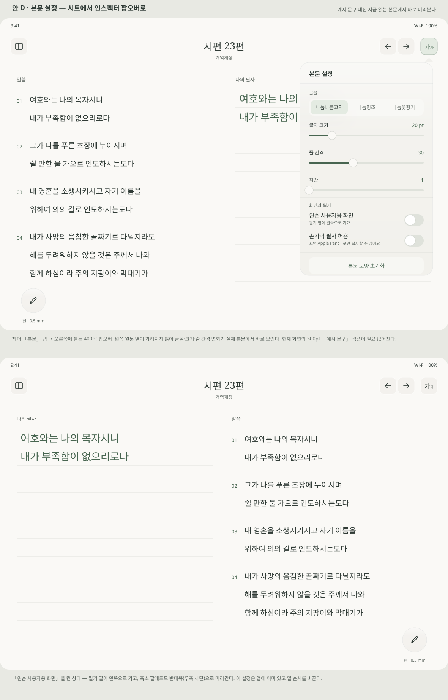
SVG 다운로드
이전 필사 기록 · 앱 설정
07 · 안 E — 이전 필사 기록 팝오버
지금은 절 롱탭 → 시트입니다. 시트가 본문을 덮어서 「지금 쓴 것과 이전 회차를 견준다」는 목적이 안 됩니다. 팝오버를 절 아래에 두면 그 절의 현재 필기가 위에 그대로 남습니다.
소스를 보니 회차를 고르는 것은 덮어쓰기가 아니라 대표 회차 전환이었습니다(updatePresentDrawing이 isPresent를 옮김). 되돌릴 수 있으니 확인 단계는 넣지 않았고, 대신 현재 화면에 없던 「지금 보이는 회차」 표시를 넣었습니다. 썸네일도 pkDrawing.bounds 그대로가 아니라 고정 폭에 맞춰 줄이는 것으로 바꿨습니다.
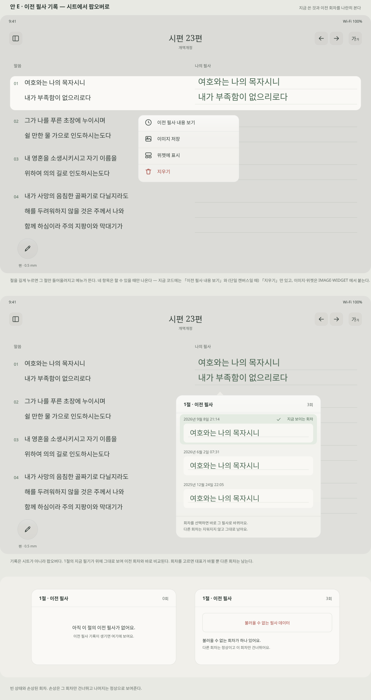
SVG 다운로드
08 · 안 F — 앱 설정
전체 화면 NavigationSplitView + 별도 X 버튼을 900 × 700 시트 + 「완료」로 바꿨습니다. 목록은 필사 · 저장 · 지원 세 묶음이고 항목은 그대로입니다. 본문 설정은 여기 넣지 않고, 어디 있는지 적는 줄만 뒀습니다.
「모든 필사 데이터 삭제」 확인 대화상자만 유리를 쓰지 않습니다 — 되돌릴 수 없는 동작이라 대비가 먼저입니다.
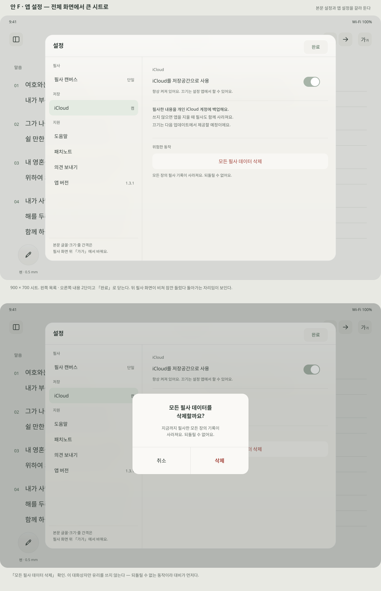
SVG 다운로드
09 · 안 G — 이미지 저장 · 위젯에 표시
절 롱탭 메뉴는 네 항목입니다 — 이전 필사 내용 보기 · 이미지 저장 · 위젯에 표시 · 지우기.
현재 코드에는 첫 항목과 (단일 캔버스일 때) 마지막 항목만 있고, 나머지 둘은 IMAGE · WIDGET 작업에서 붙습니다.
절 이미지는 본문을 위, 필기를 아래로 뒀습니다. 공유했을 때 좁은 화면에서 좌우 2단은 각각 절반으로 줄어 읽기 어려워집니다.
위젯 지정 확인은 「지정 당시 이미지」라는 것, 이미 지정된 절이 교체된다는 것, 홈 화면에 위젯을 먼저 추가해야 한다는 것을 한 화면에서 말합니다.
위젯 다크 모드는 WIDGET-0에서 확인된 위험입니다 — 위젯은 앱의 UIUserInterfaceStyle: Light를 상속하지 않습니다. 종이 유지와 반전 두 방향을 나란히 뒀고, 아직 정하지 않았습니다.
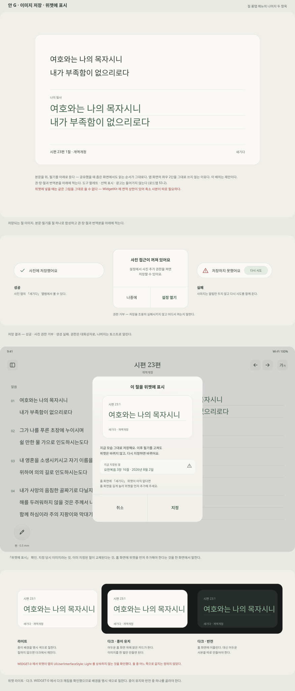
SVG 다운로드
10 · 안 H — 차트
주 이동을 좌우 버튼과 기간 표시로 드러냈습니다. 지금 차트는 가로 드래그만 받고 부모 스크롤을 죽이는 구조라 세로 스크롤이 막히는데(CHART 결함), 버튼이 있으면 드래그가 안 먹어도 주를 넘길 수 있습니다. 제스처 수정 자체를 대신하지는 않습니다.
요약 타일은 「한 주 동안 / 3절 / 최근 … / 필사하셨어요」로 흩어진 문장을 라벨과 값으로 정리했습니다. 빈 상태는 화면 1/3을 빈 문장으로 채우지 않고 돌아갈 길을 줍니다. 차트 텍스트 요약(접근성)도 함께 넣었습니다.
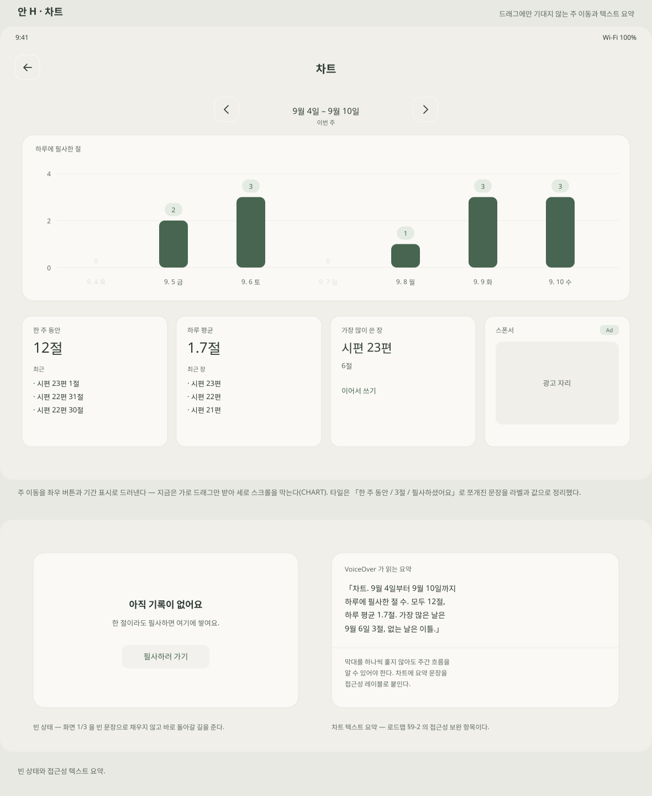
SVG 다운로드
11 · 안 I — 도움말 · 패치노트
최초 진입 안내는 본문·필기 위가 아니라 아래 여백에 뜹니다. 네 걸음이고 언제든 건너뜁니다 — 두 손가락 스크롤, 절 롱탭 메뉴, 이미지 저장, 위젯 지정과 홈 화면 추가.
패치노트는 기존 설치의 업데이트에서 한 번 뜨고 신규 설치에서는 띄우지 않습니다. 설정 「지원」에 도움말·패치노트를 넣어 언제든 다시 열 수 있게 했습니다.
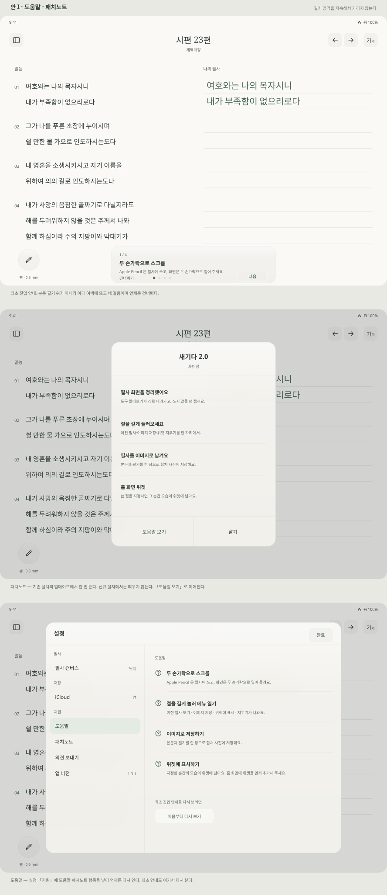
SVG 다운로드
결정용 시안 — 다크 모드 · 광고
12 · 안 J — 다크 모드 · 종이 유지
원문·필기 영역은 종이 그대로이고, 헤더·바깥 여백·떠 있는 도구만 어두워집니다. 첫 프레임에 같은 화면의 라이트와 다크를 나란히 뒀습니다.
종이는 배경 장식이어야 합니다. 원문·필기 열의 x와 폭이 라이트와 같아야 테마 전환이 reflow 자극이 되지 않습니다.
떠 있는 팔레트의 검정 색 동그라미는 어두운 표면에서 1.16:1로 묻혀 밝은 테두리를 둘렀습니다. 비용은 밤의 밝기입니다 — 종이와 책상의 대비가 15.83:1입니다.
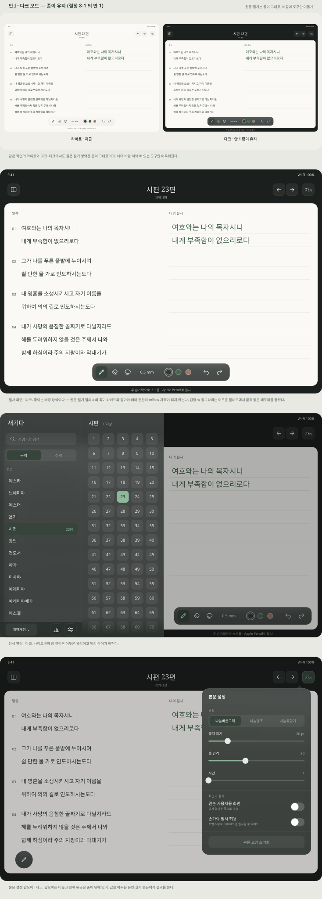
SVG 다운로드
13 · 안 K — 광고 자리
필사 화면 상시 광고의 기준은 셋입니다 — 필기 열 폭과 절 위치를 바꾸지 않을 것, 말씀·필기를 가리지 않을 것, 펜과 오른손에서 멀 것. 셋을 모두 지키는 자리는 헤더 줄 좌측뿐입니다.
탐색 사이드바 하단은 기존 차트와 같은 네이티브 광고입니다.
헤더 광고는 로드·실패·제거 어느 경우에도 헤더 높이를 바꾸면 안 됩니다 — 헤더 높이가 본문 시작점이 되기 때문입니다. 세로 화면에서는 제목과 겹쳐 들어가지 않습니다.
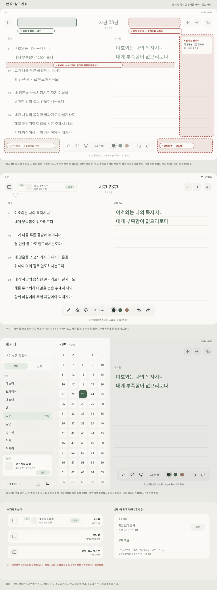
SVG 다운로드
14 · 디자인 규격 · 다크 모드
Figma 규격 보드(3:188) 옆에 붙이는 판입니다. 색은 컬렉션 하나에 모드 둘이고, 토큰 이름은 코드의 Color.Brand·색 에셋 이름에 맞췄습니다.
필사 영역은 라이트로 고정합니다 — Figma에서는 그 프레임의 변수 모드를 Light로, iOS에서는 필사 영역과 PencilKit 캔버스·도구 선택기를 라이트 외관으로 고정합니다. 위험 색은 모드마다 다릅니다(라이트 #A4453C를 다크 표면에 쓰면 2.24:1).
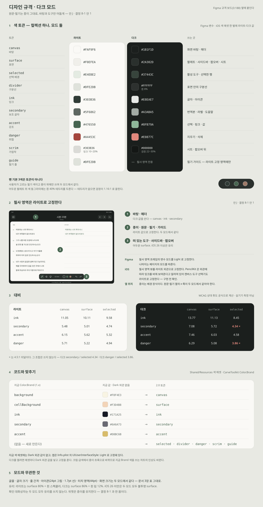
SVG 다운로드
아이콘
헤더(서재 · 이전 장 · 다음 장 · 본문 설정)와 사이드바 하단(차트 · 설정)을 글자에서 아이콘으로 바꿨습니다.
모두 24pt 그림 · 1.7pt 선이고 버튼은 44pt 정사각입니다.
사이드바 하단의 「개역한글」은 동작이 아니라 현재 값이라 글자로 남겼습니다 — 아이콘은 어떤 번역본인지 말할 수 없습니다.
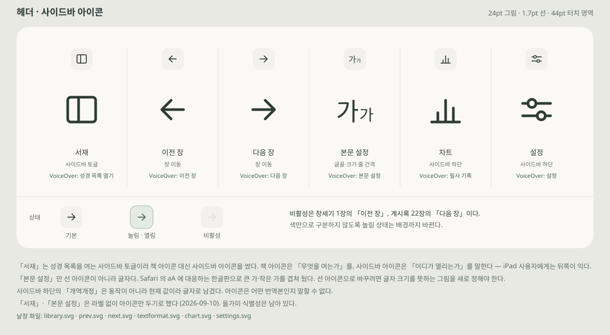
낱장 파일: library · prev · next · textformat · chart · settings · pen · eraser · lasso · undo · redo
실제 SwiftUI 구현 시 접근성 이름과 선택·비활성 상태를 제공해야 합니다. 화면 너비 변경 시 기존 필기 좌표 보존은 별도 검증 대상입니다.